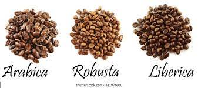
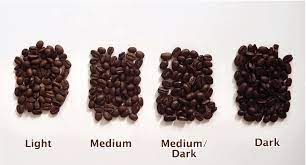
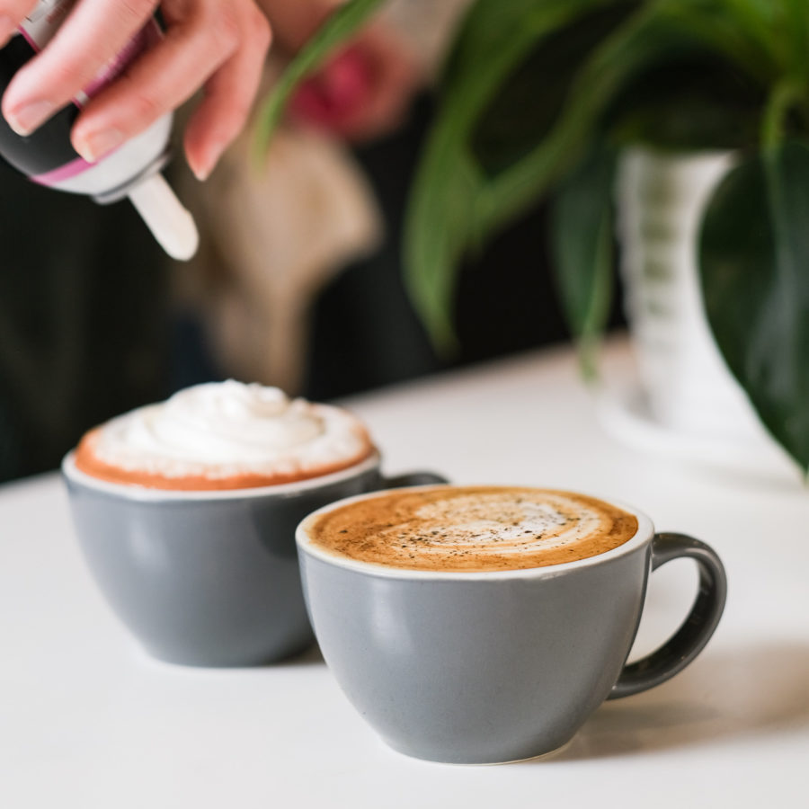
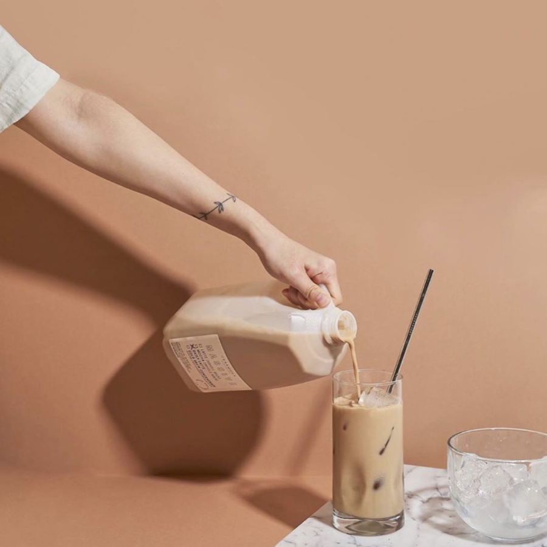
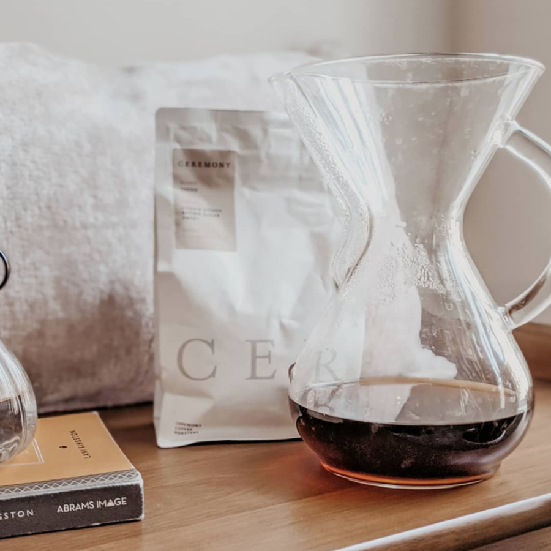

Coffee ....
make your day special
Types Of Coffee Beans
1.Arabica
2.Robusta
3.Liberica
4.Excelsa

Types Of Coffee Roasts
1. Light Roast
2. Medium Roast
3. Medium-Dark Roast
4. Dark Roast

Types Of Brewed Coffee
1. Drip Coffee
Drip coffee refers to coffee made in an automatic drip machine. The flavor of drip coffee is mild and
straightforward, so it lacks some complexity compared to other types of coffee. Drip coffee is made by a
filtration method, where hot water is poured slowly over coffee grounds held in a filter basket. Drip coffee
is popular because it requires minimal effort or knowledge to brew, and you can make it in large batches.
2. Pour Over Coffee
Pour-over coffee is coffee made with various manual pour-over coffee makers. Pour-over coffee has a
clean, crisp taste with complex flavors. Pour-over coffee is also made by a filtration method, but unlike
drip coffee, the process is entirely manual. This provides a level of control that helps to bring out the
intricate flavors.
3. Espresso
Espresso refers only to coffee made in an espresso machine. Espresso coffee must be brewed at 9 bars
of pressure, with an extraction time of between 20-30 seconds, with a coffee to water ratio of 1:2. Espresso
is a pressure brewing method where hot water forces through finely-ground coffee. Espresso has a strong,
concentrated taste.
4. Cold Brew
Cold brew coffee is different from most other coffee types. Cold brew is made with cold rather than
hot water, and it has a smooth, sweet taste with very low acidity. You make cold brew with the immersion
brewing method, where you steep coffee grounds in cold water for 18-24 hours. No special coffee maker is
required for cold brew coffee, and people often brew it in a mason jar.
Types Of Coffee Drinks
1. Cappuccino
Cappuccino presumably originated in Italy in 1901, shortly after the invention of the espresso machine. However,
the first official record of the cappuccino dates from 1930. Cappuccino is usually consumed at breakfast in
Italy and continental Europe but is a popular drink at any time of day in other parts of the world.
The classic cappuccino recipe is made with one part espresso, one part steamed milk, and one part milk foam.
People often top it with cinnamon or chocolate powder. It has a smooth, slightly sweet taste, with a lightness
from the foam.
2. Espresso
Espresso coffee originated with the invention of the espresso machine. The first espresso machine was a bulk
brewer invented in 1884 in Turin by Angelo Moriondo. The first single-serve espresso machine was patented in
1901 by Luigi Bezzera, and was put into production by the Pavoni company in 1905.
Espresso coffee is made by forcing hot water through fine ground coffee at 9 bars of pressure. Espresso is a
strong, concentrated coffee that makes it a great base for milk coffees.
3. Americano
Americano is a hot coffee drink made with espresso and hot water. The Americano originated during World War 2,
where American soldiers added hot water to espresso to help extend their coffee rations. It’s also said that
they were not used to the strong taste of the local espresso coffee.
Americano coffee is made by pulling a shot of espresso into a large cup, then topping it with hot water. It has
a less-concentrated taste than espresso but more complex tasting notes than drip coffee.
Related: What is an Americano Coffee?
4. Cortado
Cortado coffee is a hot coffee made from equal parts of espresso and steamed milk. It originates in the Basque
region of Spain, but the exact history and age are unknown. Cortado spread to the United States in the 1960s,
where it became known as Gibraltar and is also popular in Latin American countries.
Cortado is made by pulling a single shot of espresso in a small glass then adding an equal amount of steamed
milk, with no foam. This coffee drink has a strong taste that is well-balanced by the milk.
Related: Cortado Recipe
5. Red Eye
Red Eye is one of the latest coffee-drink inventions. The history of the red eye is mainly unknown, but we know
that it originated in the United States. Its name comes from the late-night red-eye flights that need an extra
boost of caffeine to recover from.
Red Eye coffee is made by adding a shot of espresso to a cup of drip coffee. Though not as concentrated as
espresso, it has a strong coffee taste and is served without milk.
6. Latte
Latte is one of the most popular milky coffee drinks. The combination of coffee and milk dates back as far as
the 17th century, but the latte as we know it today originates in the 1950s. The Caffe Mediterraneum in
Berkeley, California, standardized it as a menu item, and it became more common as it spread to Seattle cafes in
the 1980s.
Latte consists of a shot of espresso, topped by two parts steamed milk and a small amount of milk foam. It has a
sweeter, creamier taste than a cappuccino due to the higher ratio of steamed milk.
7. Macchiato
Macchiato is a variation to a simple espresso shot. Macchiato is believed to date back to the 1980s in Italy.
The story says that baristas would add a small dollop of foam to help waiters distinguish between plain espresso
and espresso with a small amount of milk added.
A macchiato is prepared by adding a small amount of steamed milk or milk foam to a shot of espresso. Unlike some
other coffee drinks, there is no standard recipe, and the preparation varies from place to place. It has a
strong taste of espresso, which is tempered slightly by milk.
8. white coffee
Flat white is yet another recently invented coffee drink. The first documented reference to the modern flat
white coffee dates back to 1983 in Sydney, Australia, mentioned in the Miller’s Treat cafe review. Still, there
are claims that the drink was prepared in cafes in both New Zealand and Australia, as far back as the 1960s.
Flat white coffee is a double shot of espresso, topped with steamed milk, but no milk foam. It has a stronger
coffee taste than a latte because of the extra shot of espresso.
9. Cafe Au Lait
Cafe au Leit is coffee with milk. The first reference to the cafe au lait dates back to the late 1600s, when
cafes first started appearing in Paris. Cafe au lait is simply the French term for “coffee with milk”, so this
would have referred to any coffee served with milk, rather than a particular drink.
Europeans usually prepare cafe au lait with a shot of espresso topped with warm milk. Still, Americans prepare
it with concentrated drip coffee, topped with steamed milk. The taste will depend on the preparation, but it
will generally have a milky taste like a latte.
10. Irish Coffee
Irish coffee is coffee with whiskey. Chef Joe Sheridan invented Irish coffee in 1943 who worked at the Fort
Payne Airbase. One night his flight was canceled due to bad weather, and Sheridan created the coffee drink
to keep the passengers warm.
Original Irish coffee is prepared with strong brewed coffee, a shot of whiskey, brown sugar, and a whipped
cream topping. It has a sweet, creamy taste with strong flavors of coffee and whiskey.
11. Turkish Coffee
Turkish coffee is a type of coffee drink that originates in Turkey. Coffee was first introduced to Turkey
around 1540 by the Turkish governor of Yemen. It was first limited to the ruling classes, where the Sultan’s
staff developed the method of preparation. By the 1550s, the general population enjoyed it, and coffee
houses began to spread through Turkey.
Coffee Gallery



subscribe